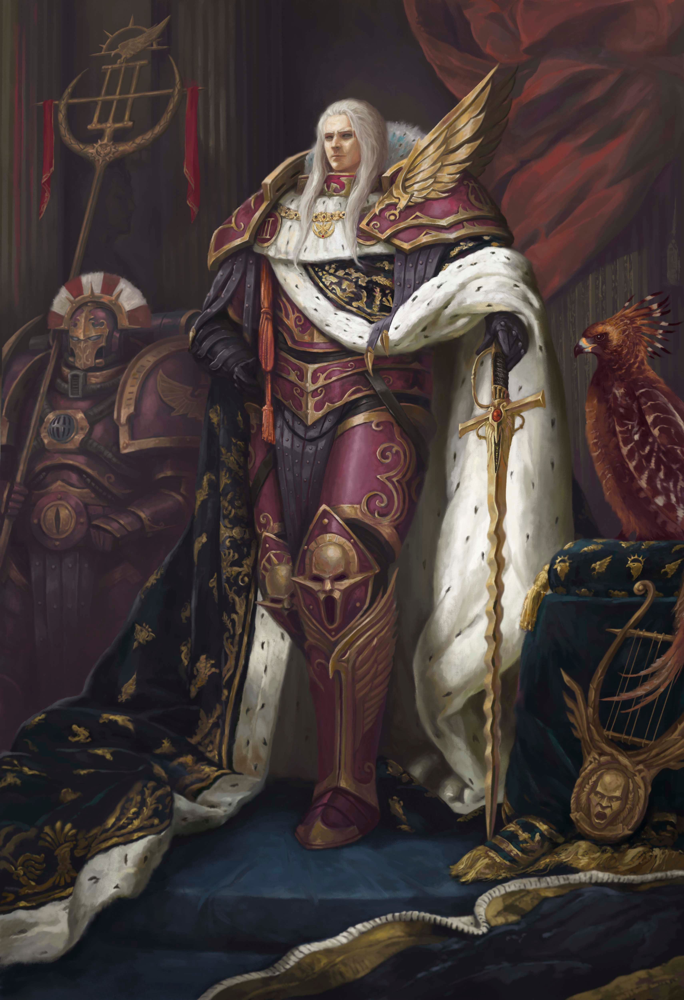

Considerado por muchos como el más bello de los Primarcas, tenía una larga cabellera blanca-plateada, y un carácter un tanto engreido, pues toda su vida estaba dedicada a la búsqueda de la perfección absoluta: física, mental y espiritual. Hoy en día, Fulgrim es un Príncipe Demonio serpentino de cuatro brazos al servicio de Slaanesh, y se cree que reside en un Mundo Demoníaco en algún lugar del Ojo del Terror. Su localización exacta sigue siendo desconocida para el Imperio y la mayoría de miembros de la Legión de los Hijos del Emperador que aún vagan por la Galaxia buscando su propio placer y ascensión. Algo que casi nadie sabe, incluyendo sus propios Hijos del Emperador, es que Fulgrim mostró remordimientos en la Masacre del Desembarco en Istvaan V, arrepintiéndose de haberse dejado corromper por los Poderes Ruinosos, en los primeros días de la Herejía de Horus.
